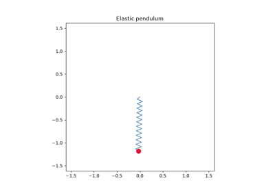

Breakthroughs in Classical Mechanics#
“We may regard the present state of the universe as the effect of its past and the cause of its future.” – Pierre-Simon Laplace, A Philosophical Essay on Probabilities, 1814
Classical mechanics is the three-century project of describing motion
exactly: from a single cannonball’s parabola to the shivering nutation of
a spinning top, the recurring energy of a nonlinear lattice, and the
long-time numerical stability needed to trust any of it on a computer. The
systems in physicskit.classical retrace that project’s successive
reformulations – Newtonian, Lagrangian, Hamiltonian – and the discoveries,
expected and accidental, that came from pushing each one further than
intended. This chronology traces the major conceptual breakthroughs behind
the package, with a pointer to the corresponding implementation in this
package at each stop.
1638 – Galileo’s Parabola#
In his Two New Sciences, written under house arrest and smuggled out of Italy for publication in Leiden, Galileo Galilei showed that a projectile launched under constant gravity follows a parabola: the independent superposition of uniform horizontal motion and uniformly accelerated vertical fall. It was the first exact, quantitative law of motion in physics, decades before Newton supplied the dynamical framework (force and mass) that explained why it holds – the historical starting point of treating motion as a problem to be solved rather than merely described.
Implementation: physicskit.classical.systems.newtonian.ProjectileMotion
integrates exactly this system (with an optional quadratic air-drag
term), and its
analytic_trajectory()
staticmethod reproduces Galileo’s exact parabola in closed form, used to
validate the numerical integrators against it.
References: Galileo Galilei, Discorsi e Dimostrazioni Matematiche, intorno a due nuove scienze (Leiden: Elsevier, 1638), “Fourth Day.”

Free fall with an oblique velocity: the cannonball problem
1687 – Newton’s Principia and the Kepler Problem#
Isaac Newton’s Philosophiae Naturalis Principia Mathematica unified terrestrial and celestial motion under a single inverse-square law of gravitation, and, together with his three laws of motion, derived Kepler’s three empirical laws of planetary motion as mathematical consequences rather than independent facts of observation. The resulting two-body (Kepler) problem – exactly solvable, with closed elliptical orbits and an exactly conserved orbital orientation – became the reference point against which every subsequent perturbation, from Mercury’s perihelion advance to spacecraft trajectory design, is measured.
Implementation: physicskit.classical.systems.newtonian.KeplerSystem
integrates exactly this Hamiltonian, with optional perturbing terms;
lrl_vector() computes
the Laplace-Runge-Lenz vector – exactly conserved for the pure 1/r
potential, and whose slow rotation once a perturbation is switched on is
the precession signature of effects like Mercury’s advance.
References: I. Newton, Philosophiae Naturalis Principia Mathematica (London, 1687), Book I, Props. XI-XIII.

1744 – Maupertuis, Euler, and the Principle of Least Action#
Pierre-Louis Moreau de Maupertuis proposed, and Leonhard Euler gave the first mathematically rigorous treatment of, a strikingly different way to characterize motion: rather than integrate forces moment to moment, a particle’s actual path between two fixed endpoints is exactly the one that makes a certain integral – the action – stationary among every neighboring conceivable path.
Stripped of Maupertuis’s own teleological framing (he read the principle as evidence of a providentially economical universe) and given Euler’s rigorous mathematical footing, this stationary-action condition is exactly what, once recast in Lagrange’s later notation of an arbitrary Lagrangian \(L = T - V\) integrated over time rather than Maupertuis’s more restrictive \(\int 2T\,dt\), generates the Euler-Lagrange equations below as its extremal condition – the variational bedrock the entire Lagrangian reformulation of mechanics, and every Lagrangian system in this package, is built on top of, decades before Lagrange gave it its definitive, coordinate-free form.
Connection: every system built on
physicskit.classical.utils.symbolic.LagrangianEngine (see 1788,
below) is, in substance, a numerical demonstration of this stationary-action
principle: the engine derives its equations of motion directly from the
Euler-Lagrange equations rather than by extremizing an action integral
explicitly, but those equations are exactly the condition Maupertuis and
Euler’s principle establishes.
References: P. L. M. de Maupertuis, “Accord de différentes lois de la nature qui avaient jusqu’ici paru incompatibles,” Mémoires de l’Académie Royale des Sciences (Paris), 417-426 (1744); L. Euler, “Methodus inveniendi lineas curvas maximi minimive proprietate gaudentes” (Lausanne/Geneva, 1744), Additamentum II.

Building your own system: LagrangianEngine from scratch
1765 – Euler’s Rigid Body and the Tennis-Racket Theorem#
Leonhard Euler derived the equations governing the free rotation of a rigid body about its own center of mass, expressed in the body-fixed frame aligned with the three principal axes of inertia. Buried in this simple-looking, torque-free system, and following as an immediate linear-stability consequence of Euler’s own equations rather than anyone’s later, datable discovery, is a genuine instability: rotation about the axis of intermediate moment of inertia is unstable, while rotation about the axes of largest and smallest moment is stable – the intermediate axis theorem, now popularly known as the tennis-racket theorem, and, after cosmonaut Vladimir Dzhanibekov’s 1985 in-orbit observation of a tumbling wingnut aboard Salyut 7, the Dzhanibekov effect.
Implementation: physicskit.classical.systems.rotations.EulerTop
integrates exactly these equations (coupled to an orientation quaternion),
exactly conserving both kinetic energy and squared angular momentum via
its implicit-midpoint integrator; exciting a spin dominantly about the
intermediate axis reproduces the periodic tumbling directly, and
physicskit.classical.visualizers.animations.animate_rigid_body_tumble()
renders that tumbling literally, as a 3D wireframe box rotated at each
frame by the integrated orientation quaternion via
rotation_matrix().
See the animated tumbling box in
The Dzhanibekov effect, literally: a tumbling 3D rigid body.
References: L. Euler, Theoria motus corporum solidorum seu rigidorum (Rostock/Greifswald, 1765); earlier: “Découverte d’un nouveau principe de mécanique,” Mémoires de l’Académie des Sciences de Berlin 6 (1750/1752), 185-217.

The intermediate axis theorem (Dzhanibekov effect)
1788 – Lagrange’s Mecanique Analytique#
Joseph-Louis Lagrange’s Mecanique Analytique recast all of mechanics in terms of a single scalar function, the Lagrangian \(L = T - V\), and arbitrary generalized coordinates \(q\) free of any particular choice of axes or constraint forces – famously boasting in its preface that the book contained not a single diagram. The resulting Euler-Lagrange equations, \(\frac{d}{dt}\frac{\partial L}{\partial \dot q} - \frac{\partial L}{\partial q} = 0\), reduce deriving the equations of motion for an arbitrarily complicated constrained system to a mechanical exercise in differentiation, at the cost of no longer working directly with forces at all.
Implementation: physicskit.classical.utils.symbolic.LagrangianEngine
automates exactly this exercise with SymPy, differentiating a
hand-written Lagrangian to produce compiled equations of motion; it
underlies physicskit.classical.systems.lagrangian.DoublePendulum,
CoupledOscillators, and
BeadOnRotatingHoop. See the
raw workflow, from a hand-written L to compiled equations of
motion, in
Building your own system: LagrangianEngine from scratch.
References: J.-L. Lagrange, Mécanique Analytique (Paris: Veuve Desaint, 1788).
Building your own system: LagrangianEngine from scratch
1834 – Hamilton’s Canonical Mechanics#
William Rowan Hamilton reformulated mechanics a second time, replacing each generalized velocity \(\dot q\) with a canonical momentum \(p = \partial L/\partial \dot q\) via a Legendre transform, and recast the second-order Euler-Lagrange equations as twice as many coupled first-order equations for \((q, p)\) moving through a single unified space – phase space.
Hamilton laid out the canonical momentum and the phase-space reformulation
in his 1834 essay “On a General Method in Dynamics”; the fully symmetric
pair of first-order equations in exactly this (q, p) form, however,
appears explicitly only in the sequel the following year, the “Second
Essay on a General Method in Dynamics.” Beyond its practical convenience,
this symmetric (q, p) structure is
what makes possible everything from Liouville’s theorem to modern
symplectic numerical integration: transformations that preserve it
(canonical transformations) form the natural symmetry group of mechanics
itself.
Implementation: physicskit.classical.core.base_system.HamiltonianSystem
is the base class every canonical system in this package derives from,
exposing exactly the q/p phase-space split and the H = T(p) +
V(q) structure that both the physics and the symplectic integrators
below depend on.
References: W. R. Hamilton, “On a General Method in Dynamics,” Phil. Trans. R. Soc. 124 (1834), 247-308, and “Second Essay on a General Method in Dynamics,” Phil. Trans. R. Soc. 125 (1835), 95-144.

1834 – 1843 – Hamilton-Jacobi Theory and Action-Angle Variables#
Alongside his canonical reformulation above, William Rowan Hamilton (1834) and Carl Gustav Jacob Jacobi (1837-1843) developed a still more powerful technique: rather than solve Hamilton’s equations directly, look for a canonical transformation to new coordinates in which the Hamiltonian itself becomes trivial. For any bounded, integrable one-degree-of-freedom system, the natural choice of new momentum is the action,
the phase-space area enclosed by one period’s orbit, divided by \(2\pi\); its canonically conjugate coordinate, the angle \(\theta\), advances uniformly in time at the orbit’s own frequency, \(\dot\theta = \partial H/\partial J\), no matter how nonlinear or anharmonic the original motion looks in \((q,p)\). Action-angle variables reduce an arbitrary bound orbit to the same trivial uniform rotation a harmonic oscillator already has, and the action \(J\) itself is an adiabatic invariant, unchanged by any sufficiently slow change in the system’s parameters – the exact classical quantity that Wilson and Sommerfeld would, eight decades later, simply set equal to an integer multiple of Planck’s constant to build the old quantum theory’s quantization rule. Neither Hamilton nor Jacobi himself worked in these action-angle terms; the formalism and vocabulary used here crystallized only gradually afterward, through Charles-Eugene Delaunay’s action-angle treatment of lunar theory in the 1860s and, decisively, Karl Schwarzschild’s 1916 systematization of multiply-periodic systems built directly for the old quantum theory – so the label “Hamilton-Jacobi theory” names the general method the two men built, not a settled 1834-43 result already phrased in today’s action-angle language.
Implementation: physicskit.classical.systems.hamiltonian.pendulum_action_angle()
computes exactly \(J(E)\) and the orbital period \(T(E)\) for a
librating pendulum, via the closed-form elliptic-integral solution of the
enclosed phase-space area above – the same action variable that reappears,
quantized, in physicskit.semiclassical.core.wkb.bohr_sommerfeld_energies().
References: C. G. J. Jacobi, “Über die Reduction der Integration der partiellen Differentialgleichungen erster Ordnung zwischen irgend einer Zahl Variabeln auf die Integration eines einzigen Systems gewöhnlicher Differentialgleichungen,” J. Reine Angew. Math. 17 (1837), 97-162; C. G. J. Jacobi, Vorlesungen über Dynamik (lectures 1842-43), ed. A. Clebsch (Berlin: Reimer, 1866).

1838 – Liouville’s Theorem#
Joseph Liouville showed that the flow generated by any Hamiltonian system preserves phase-space volume, even though it may stretch, shear, and fold that volume into arbitrarily filamented shapes. A cloud of nearby initial conditions can never be compressed by Hamiltonian dynamics alone – a fact with consequences from the impossibility of a perpetual-motion “Maxwell’s demon” that shrinks phase space, to the kinetic theory of gases, to the modern definition of what it means for a numerical integrator to be trustworthy over long times. Liouville’s own 1838 paper is narrower and more technical than this: it is a lemma about the invariance of a certain differential form under the flow of a system of ordinary differential equations, stated without reference to physics at all. Reading it as “Hamiltonian phase-space volume is conserved” is a later reinterpretation, one that only took its now-standard statistical- mechanical meaning in the hands of Boltzmann and Gibbs decades afterward.
Implementation: physicskit.classical.systems.hamiltonian.PendulumSwarm
evolves an ensemble of independent pendulums as one N-degree-of-freedom
Hamiltonian system specifically to visualize this theorem, with
phase_space_area()
tracking the occupied region’s area as it shears into filaments while
staying constant.
References: J. Liouville, “Note sur la théorie de la variation des constantes arbitraires,” J. Math. Pures Appl. 3 (1838), 342-349.

1851 – Foucault’s Pendulum#
Hung from the dome of the Paris Pantheon on a 67-meter wire, Leon Foucault’s pendulum gave the first purely mechanical demonstration that Earth rotates – no telescope, no star, just a swinging weight and a patient afternoon. Viewed from an inertial frame the pendulum’s swing plane never changes; viewed from the ground, that same fixed plane appears to rotate steadily beneath it, because the ground itself is turning. In the small-oscillation limit this is exactly a Coriolis term added to an isotropic harmonic restoring force, and because the Coriolis force is always perpendicular to the velocity it does no work: the swing plane precesses while the pendulum’s energy stays exactly conserved. The precession rate depends on nothing but latitude – zero at the equator, one full turn per sidereal day at the poles – turning a tabletop toy into a working (if slow) instrument for measuring where on Earth you stand.
Implementation: physicskit.classical.systems.newtonian.FoucaultPendulum
integrates exactly this Coriolis-coupled planar oscillator;
analytic_solution()
gives the exact closed-form small-oscillation trajectory (via the
complex substitution \(w = x + iy = e^{-i\omega_z t}u(t)\), reducing
it to plain harmonic motion for u), and
to_corotating_frame()
rotates a computed trajectory by \(+\omega_z t\) to undo the
precession, recovering the single fixed swing plane Foucault’s pendulum
traces in an inertial frame.
References: L. Foucault, “Démonstration physique du mouvement de rotation de la Terre au moyen du pendule,” C. R. Acad. Sci. 32 (1851), 135-138.

1890 – Poincare and the Three-Body Problem#
Henri Poincare’s prize-winning memoir for King Oscar II of Sweden, submitted to advance the general n-body problem and instead proving that no general closed-form solution exists, is usually credited as the discovery of deterministic chaos. Studying the restricted three-body problem – a massless test particle moving under the gravity of two much heavier bodies in mutual circular orbit – Poincare found that a trajectory’s stable and unstable manifolds could intersect not once but infinitely many times, weaving an inconceivably tangled homoclinic web in which nearby trajectories separate without bound and never repeat, even though the underlying equations are perfectly deterministic and none of Newton’s, Lagrange’s, or Hamilton’s frameworks above had broken down. To make this structure visible at all in a system too complicated to solve in closed form, Poincare introduced the surface of section that bears his name: instead of plotting a continuous trajectory through a high-dimensional phase space, record only where it punctures a fixed lower-dimensional slice, turning an otherwise-illegible tangle of curves into a scatter of points whose own pattern – smooth closed curves, or a structureless haze – reveals whether the underlying motion is regular or chaotic.
The prize-winning memoir itself was not the clean, one-shot submission that phrase suggests. The version that won King Oscar II’s 1889 prize and went to typesetting contained an error; after the flaw was caught, Poincare paid out of pocket to recall and destroy the printed copies of that first memoir, and it was in the course of correcting it that the tangled homoclinic structure – absent from the original, erroneous argument – actually emerged. The corrected, expanded memoir, the one containing the homoclinic-tangle discovery for which the episode is now remembered, is the 1890 Acta Mathematica paper cited below.
Implementation: physicskit.classical.visualizers.phase_space.poincare_section()
and plot_poincare_section()
implement exactly this construction – recording a trajectory’s (q, p)
each time a chosen coordinate crosses a fixed value in a fixed direction,
interpolated to sub-step accuracy – and are the tool put to use below, on
the Henon-Heiles system, to turn continuous orbits into the
smooth-tori-versus-chaotic-sea pictures that gave one of the first clear
views of Hamiltonian chaos.
References: H. Poincare, “Sur le problème des trois corps et les équations de la dynamique,” Acta Mathematica 13 (1890), 1-270 (the corrected, expanded memoir).

The Henon-Heiles system: Poincare sections and KAM torus breakdown
1896 – 1988 – Walker, Garcia and Hubbard, and the Rattleback#
A rattleback – a boat-shaped top also called a Celt stone or wobblestone – does something an ordinary top never does: spun one way it turns smoothly forever, but spun the other way it soon wobbles, stalls, and reverses into the stable sense of spin. Sir Gilbert Walker gave the first mathematically serious account of it in “On a Dynamical Top” (1896, Quarterly Journal of Pure and Applied Mathematics 28, 175-184): modeling the body as a rigid ellipsoid rolling without slipping, whose principal inertia axes are slightly skewed from its geometric (contact-surface) axes, and linearizing about steady spin, he showed that stable spin is possible in only one of the two senses – the asymmetry that later analyses would identify as the entire mechanism behind reversal. It took most of a century for a full nonlinear theory to catch up: Alan Garcia and Mont Hubbard’s “Spin Reversal of the Rattleback: Theory and Experiment” (1988, Proceedings of the Royal Society A 418, 165-197) derived a closed-form expression for the reversal time directly from the misalignment angle, the body’s principal curvatures, and its moments of inertia, and confirmed it against a real, machined rattleback – closing the loop between Walker’s linear stability result and an actual physical demonstration of one-way spin reversal.
Implementation: rather than reproducing Garcia and Hubbard’s full
nonholonomic rolling-contact dynamics, which requires tracking the body’s
orientation, its moving contact point, and the no-slip constraint
together, physicskit.classical.systems.rotations.Rattleback
builds directly on EulerTop’s
free-rigid-body equations for a reduced state, adding a single term that
couples the spin asymmetrically into the two rocking modes – the minimal
way to break the symmetry an ordinary (non-reversing) Euler top has –
plus linear damping and cubic self-saturation so the instability the
asymmetry pumps up saturates and decays rather than diverging. A hard
spin started predominantly one way collapses, overshoots into reversed
spin, and decays, reproducing Walker’s one-way stability and Garcia and
Hubbard’s reversal phenomenology without claiming quantitative accuracy
for any specific body.
physicskit.classical.visualizers.animations.animate_rattleback()
animates the reversal directly, as a spinning indicator arrow alongside
the spin-rate trace crossing zero.
1897 – Klein, Sommerfeld, and the Heavy Symmetric Top#
Felix Klein and Arnold Sommerfeld’s four-volume Uber die Theorie des Kreisels (1897-1910) gave the definitive classical treatment of the heavy symmetric top – a spinning top with one point fixed, precessing and nutating under gravity – reducing its genuinely non-separable three-angle dynamics to a single effective one-dimensional problem in the nutation angle \(\theta\), via the two momenta conjugate to the cyclic precession and spin angles.
Implementation: physicskit.classical.systems.rotations.HeavySymmetricTop
integrates the full three-angle dynamics symbolically;
physicskit.classical.systems.rotations.effective_potential_symmetric_top()
implements exactly this effective potential, with
find_theta_equilibrium(),
nutation_frequency(), and
precession_frequency() extracting
the steady-precession angle and the small-oscillation nutation and
precession rates about it.
References: F. Klein and A. Sommerfeld, Über die Theorie des Kreisels, 4 vols. (Leipzig: Teubner, 1897-1910).

The heavy symmetric top: effective potential, precession and nutation
1918 – Noether’s Theorem#
Emmy Noether proved a theorem that retroactively explains why so many of the conserved quantities above exist at all: for any Lagrangian (or Hamiltonian) system whose action is invariant under a continuous one-parameter family of transformations, there is a corresponding conserved quantity, constructible directly from that symmetry. Invariance under a time shift gives conservation of energy; invariance under a spatial rotation gives conservation of angular momentum; invariance under a spatial translation gives conservation of linear momentum. What had been, since Newton, a list of separately discovered conservation laws became a single theorem: find the continuous symmetry, and the conservation law falls out mechanically. The Kepler problem’s Laplace-Runge-Lenz vector, conserved above for a reason that looks nothing like an obvious rotation or translation of space and time, is the package’s own reminder that the converse can be subtle – some conserved quantities correspond to a “hidden,” dynamical symmetry (an \(SO(4)\) symmetry of the bound Kepler problem, in that case) rather than a manifest geometric one, and finding it can be far harder than applying Noether’s theorem once it is in hand.
Implementation: the conserved quantities that recur throughout this
package are exactly the ones Noether’s theorem predicts from the
symmetries of the systems it is applied to:
physicskit.classical.utils.conservation.relative_energy_drift()
and energy()
track the time-translation invariant (energy);
angular_momentum_2d() and
angular_momentum_drift(),
together with
physicskit.classical.systems.newtonian.KeplerSystem.angular_momentum(),
track the rotational invariant (angular momentum); and
lrl_vector()
(see 1687, above) tracks the Kepler problem’s hidden-symmetry invariant
that has no comparably simple, manifest geometric symmetry behind it.
physicskit.classical.systems.rotations.EulerTop’s exact
conservation of kinetic energy and squared angular momentum (see 1765,
above) is the same theorem again, applied to the free rigid body.
References: E. Noether, “Invariante Variationsprobleme,” Nachr. Ges. Wiss. Göttingen, Math.-Phys. Kl. (1918), 235-257; English translation, “Invariant Variation Problems,” Transport Theory and Statistical Physics 1(3) (1971), 186-207.

Angular momentum: a different conservation law from energy

Noether’s Theorem and the Kepler Problem’s Hidden Symmetry
1933 – Vitt and Gorelik’s Elastic Pendulum#
A mass hanging from a spring, free to both stretch and swing, looks like two nearly independent one-dimensional oscillators – a vertical spring and a horizontal pendulum – coupled only weakly by the geometry of a mass whose distance from the pivot varies as it swings. Aleksandr Vitt and Grigory Gorelik showed in 1933 (“Oscillations of an Elastic Pendulum as an Example of the Oscillations of Two Parametrically Coupled Linear Systems”) that this weak coupling becomes dramatically strong whenever the spring’s natural stretching frequency sits close to twice the pendulum’s natural swinging frequency: energy started as pure vertical stretching leaks steadily into swinging and back again, in a periodic exchange they explicitly compared to the recently discovered Fermi resonance in the vibrational spectrum of carbon dioxide. This 1:2 autoparametric resonance became a standard paradigm system for energy exchange between normal modes driven by purely geometric (rather than dissipative) nonlinearity, and, pushed to larger amplitude, for the transition from clean periodic energy exchange to genuine chaos.
Implementation: physicskit.classical.systems.lagrangian.ElasticPendulum
implements exactly this two-degree-of-freedom Lagrangian, with s the
spring’s stretch beyond its natural length L0 and theta the swing
angle, via LagrangianEngine;
its default parameters (k = 4*m*g/L0) satisfy Vitt and Gorelik’s exact
1:2 resonance condition.
physicskit.classical.visualizers.animations.animate_elastic_pendulum()
animates the coil visibly stretching and swinging together. See it in
The Elastic Pendulum and 1:2 Autoparametric Resonance.
References: A. Vitt and G. Gorelik, “Oscillations of an Elastic Pendulum as an Example of the Oscillations of Two Parametrically Coupled Linear Systems,” Zhurnal Tekhnicheskoi Fiziki 3 (1933), 294-307 (in Russian). The page range is as commonly cited in secondary literature; it has not been independently verified against the original journal.

The Elastic Pendulum and 1:2 Autoparametric Resonance
1938 – Frenkel, Kontorova, and the Discrete Soliton Chain#
Modeling dislocations in a crystal lattice, Yakov Frenkel and Tatiana Kontorova introduced a chain of masses coupled to their neighbors by linear springs and, individually, to a periodic (sinusoidal) substrate potential – the discrete analog of what would later be named the sine-Gordon equation once its continuum limit was studied in earnest. The model’s most striking feature is topological: a localized twist that carries the chain from one potential minimum to the next – a kink – cannot be undone by any local perturbation, only by colliding it with an antikink, and it propagates as a stable, particle-like soliton whose exact traveling-wave (Lorentz-contracted) profile was worked out as inverse-scattering soliton theory matured through the 1970s.
Implementation: physicskit.classical.systems.chains.SineGordonChain
integrates exactly this discrete Frenkel-Kontorova chain, and its
kink() staticmethod
builds exactly this boosted, Lorentz-contracted kink (or antikink)
initial condition.
References: Ya. I. Frenkel and T. Kontorova, Zhurnal Eksperimentalnoi i Teoreticheskoi Fiziki 8 (1938), 89-95 (also published as Izv. Akad. Nauk SSSR Ser. Fiz. 1, 137-149). The page numbers, drawn from secondary sources for this Russian-language original, should be treated as needing independent double-checking rather than as verified.

Sine-Gordon solitons: kink propagation and a kink-antikink breather
1955 – The Fermi-Pasta-Ulam-Tsingou Paradox#
Enrico Fermi, John Pasta, Stanislaw Ulam, and (largely uncredited at the time) Mary Tsingou ran one of the first computer experiments in physics, on the MANIAC I at Los Alamos: a chain of masses coupled by weakly nonlinear springs, expecting the nonlinearity to slowly thermalize energy initially placed in a single low-order vibrational mode across all the chain’s modes, as ergodic reasoning demanded. Instead, the energy returned almost exactly to the initial mode after a characteristic recurrence time, again and again, refusing to thermalize at all. The “FPU(T) paradox” went unexplained for over a decade, until Zabusky and Kruskal’s 1965 continuum analysis of a closely related lattice revealed the underlying solitons – launching both soliton theory and the modern computational study of nonlinear dynamics in one stroke.
Implementation: physicskit.classical.systems.chains.FPUTChain
implements exactly this quartic (\(\beta\)) nonlinear lattice, with
modal_energies()
(inherited from the shared chain base) tracking each linear normal
mode’s energy over time to reproduce the recurrence directly; the purely
linear HarmonicChain is the
exactly-solvable reference lattice the FPUT modes are defined against.
References: E. Fermi, J. Pasta, and S. Ulam, “Studies of Nonlinear Problems,” Los Alamos Report LA-1940 (1955) (an internal laboratory report, not a peer-reviewed journal paper); N. J. Zabusky and M. D. Kruskal, “Interaction of ‘Solitons’ in a Collisionless Plasma and the Recurrence of Initial States,” Phys. Rev. Lett. 15 (1965), 240-243.

1954 – 1963 – The KAM Theorem#
Andrey Kolmogorov, Vladimir Arnold, and Jurgen Moser established, in successively more general and rigorous form, one of the central results governing what happens to an integrable Hamiltonian system’s orderly motion when it is perturbed. Kolmogorov’s 1954 announcement, followed by complete proofs from Arnold (1963, for analytic Hamiltonian systems) and Moser (1962, under weaker smoothness assumptions), showed that most invariant tori of an integrable system – specifically those whose orbits wind around with a sufficiently “irrational,” Diophantine frequency ratio, poorly approximable by rationals – survive a small enough perturbation, merely deformed rather than destroyed, while the tori with rational or near-rational frequency ratios are exactly the ones that break up first. The result gave the first rigorous explanation for why generic near-integrable systems – the solar system prominent among them – are neither fully regular nor fully chaotic but a persistent mixture of both, and it supplied the name for the surviving invariant tori, “KAM tori,” used below without further comment in describing the Henon-Heiles system.
Connection: this package has no standalone KAM proof or torus-survival
diagnostic to point to – the theorem is an existence and persistence
result about invariant tori under perturbation, not itself an algorithm –
but the Poincare sections produced by
physicskit.classical.visualizers.phase_space.poincare_section() and
plot_poincare_section(),
applied to physicskit.classical.systems.hamiltonian.HenonHeilesSystem
directly below, are exactly the classic picture of the theorem in action:
smooth closed curves are surviving KAM tori seen in cross section, and
the structureless scatter that replaces them at higher energy is what a
torus looks like after breaking up.
References: A. N. Kolmogorov, “On Conservation of Conditionally Periodic Motions for a Small Change in Hamilton’s Function,” Dokl. Akad. Nauk SSSR 98 (1954), 527-530; J. Moser, “On Invariant Curves of Area-Preserving Mappings of an Annulus,” Nachr. Akad. Wiss. Göttingen Math.-Phys. Kl. II (1962), 1-20; V. I. Arnold, “Proof of a Theorem of A. N. Kolmogorov on the Preservation of Conditionally Periodic Motions Under a Small Perturbation of the Hamiltonian,” Russian Math. Surveys 18(5) (1963), 9-36, and “Small Denominators and Problems of Stability of Motion in Classical and Celestial Mechanics,” Russian Math. Surveys 18(6) (1963), 85-191.
The Henon-Heiles system: Poincare sections and KAM torus breakdown
1964 – The Henon-Heiles System and Hamiltonian Chaos#
Modeling the motion of a star in the smoothed-out gravitational potential of an axisymmetric galaxy, Michel Henon and Carl Heiles built one of the simplest possible non-integrable Hamiltonian systems – two coupled nonlinear oscillators sharing a single cubic coupling term – specifically to test whether real astronomical orbits obeyed a conjectured “third integral” of motion beyond energy and angular momentum. Plotting its Poincare sections at successively higher energies gave one of the first clear pictures of Hamiltonian chaos: smooth KAM tori at low energy, progressively dissolving into a chaotic sea as the energy approaches and exceeds a critical threshold.
Implementation: physicskit.classical.systems.hamiltonian.HenonHeilesSystem
integrates exactly this Hamiltonian; below \(E \sim 1/6\) its Poincare
section is dominated by smooth tori, and as \(E\) approaches and
exceeds \(1/6\) the tori progressively break up, exactly as Henon and
Heiles found.
References: M. Henon and C. Heiles, “The Applicability of the Third Integral of Motion,” Astron. J. 69 (1964), 73-79.
The Henon-Heiles system: Poincare sections and KAM torus breakdown
1983 – 1990 – Ruth and Yoshida: Symplectic Integrators#
Ronald Ruth showed in 1983 how to build a numerical integrator that is itself an exact canonical (symplectic) transformation at every step – guaranteeing, unlike ordinary Runge-Kutta methods, that the numerically computed energy of a conservative system oscillates within a small bound forever rather than drifting away over long integrations. Haruo Yoshida generalized the technique in 1990, showing how to compose several lower-order symplectic sub-steps, with carefully chosen (and one negative) sub-step sizes, to raise the accuracy from 2nd to 4th order – or arbitrarily higher – while remaining exactly symplectic throughout. This turned long-time, high-accuracy Hamiltonian simulation – solar system integrations over millions of orbits, molecular dynamics over billions of steps – from a losing battle against numerical energy drift into a solved problem.
Implementation: physicskit.classical.core.integrators.velocity_verlet_integrate()
implements the 2nd-order symplectic Stormer-Verlet scheme;
yoshida4_integrate() composes three
Verlet sub-steps with exactly Yoshida’s (1990) coefficients to reach 4th
order;
implicit_midpoint_integrate()
extends symplectic integration to non-separable systems (a
configuration-dependent mass matrix, as in
DoublePendulum or
HeavySymmetricTop) where Verlet
and Yoshida4 do not apply. The drift these integrators avoid is measured
directly by
physicskit.classical.utils.conservation.relative_energy_drift(),
angular_momentum_drift(), and
lrl_drift().
References: R. D. Ruth, “A Canonical Integration Technique,” IEEE Trans. Nucl. Sci. NS-30 (1983), 2669-2671; H. Yoshida, “Construction of Higher Order Symplectic Integrators,” Phys. Lett. A 150 (1990), 262-268.

Why symplectic integration: RK4 leaks energy, Yoshida4 does not
2000 – Moffatt and Euler’s Disk’s Finite-Time Singularity#
Spin a coin or a purpose-built disk and set it rolling flat on a table, and it settles into a shuddering near-steady state whose contact point precesses faster and faster – the characteristic rattling sound rising in pitch – right up until the disk suddenly, abruptly stops: an everyday tabletop toy hiding a genuine finite-time singularity. Keith Moffatt gave the first quantitative account in “Euler’s Disk and Its Finite-Time Singularity” (2000, Nature 404, 833-834), showing that if the dissipation is dominated by viscous drag in the thin layer of air trapped between the disk and the table, the inclination angle must collapse to zero – and the contact point’s precession rate diverge – in a finite time rather than merely decaying asymptotically. The proposed mechanism proved controversial almost immediately: later the same year, Ger Van den Engh, Peter Nelson, and Jared Roach (“Numismatic Gyrations,” Nature 408, 540) reported that coins spun in a vacuum stopped almost as abruptly as in air, arguing that rolling friction and slippage at the contact point, not air drag, are what actually terminate the spin. Decades later the precise dissipation mechanism is still debated, even though the finite-time collapse itself is universally observed and uncontroversial.
Implementation: rather than committing to one first-principles
dissipation mechanism, physicskit.classical.systems.rotations.EulersDisk
uses a reduced phenomenological pair of ODEs for the inclination angle
theta and precession angle phi in which both the precession rate and
the (implied) dissipation rate diverge as theta -> 0, reproducing the
same qualitative finite-time collapse Moffatt analyzed regardless of which
side of the mechanism debate is right;
eulers_disk_theta_analytic()
gives the exact closed-form solution above, valid up to the finite
collapse time \(t_f\).
physicskit.classical.visualizers.animations.animate_eulers_disk()
animates the contact point spiraling inward and precessing faster and
faster as theta collapses.

Euler’s Disk: a finite-time singularity on a tabletop